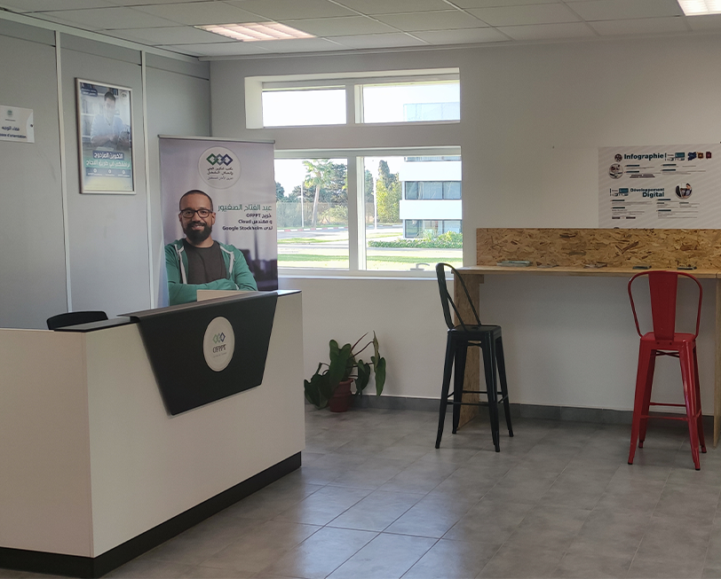
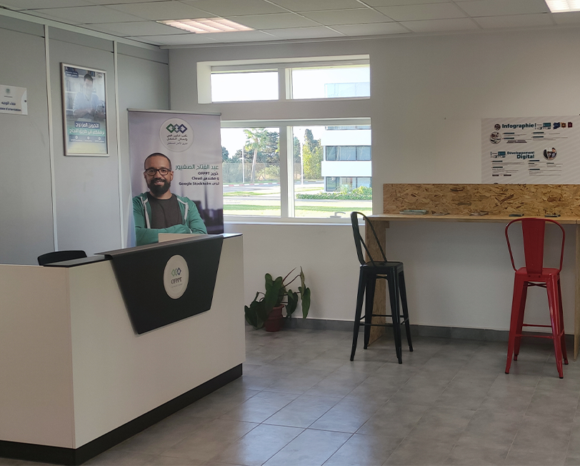
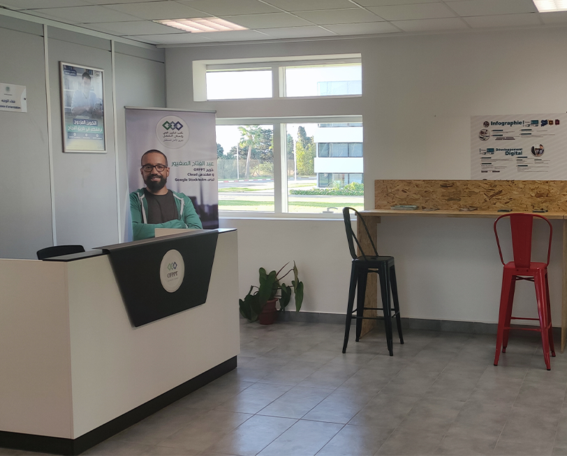

Institut spécialisé dans les métiers de l'offshoring Tétouan
Le centre d'excellence
 

Le centre d'excellence

• Cet institut, qui s'inscrit dans le cadre du programme de développement intégré destiné à accompagner le Contrat-programme TIC, mis en place par l'OFPPT, a pour mission de répondre aux besoins en compétences des opérateurs économiques de la région, d'offrir aux jeunes des qualifications adaptées au marché du travail et de participer à la valorisation de la région du Nord.
• D'une superficie de plus de 2.000 m2 couverts, l'ISMO a une capacité d'accueil de 400 places et permet la formation de près de 700 stagiaires/an dans les niveaux techniciens spécialisés. Cet établissement offre également des formations qualifiantes et les cursus de formation dispensés couvrent l'ensemble des filières liées aux métiers des DIGITAL.
• Cet établissement comprend 6 salles spécialisées, 1 salle de cours, une salle Centres d'Appels, une unité de ressources didactiques en plus d'un bloc administratif, career center, ainsi que d'autres équipements nécessaires au bon déroulement de la formation.
• L'institut forme dans les filières de développement digital, infrastructures digital, et l'infographie pour le niveau techniciens spécialisés, alors qu'une formation qualifiante bureauticien certifié en microsoft office specialist est en Téléconseiller Centres d'Appels sont également prévue en vue de participer à la requalification des jeunes de Tétouan et sa région.
Sa Majesté le Roi Mohammed VI a décoré ISSAM KASTTET ,Stagiaire de filière TDI à ISMO TETOUAN , Majeur de promotion 2015.
Le stagiaire HAMZA JEBBOUR de la filière TRI a remporté le premier prix du concours Cisco NetRiders Africa 2019.
Les quatre équipes qui ont participé au concours Google HashCode ont remporté les quatre premières places au niveau de Hub Everis Morocco.
Les stagiaires de l’ISMO TETOUAN ont remporté le 2ème prix de City’Zen Challenge 2021.
Pour la deuxième année consécutive, une équipe de stagiaires de l'ISMO Tétouan a remporté le deuxième prix de City’Zen Challenge édition 2022.